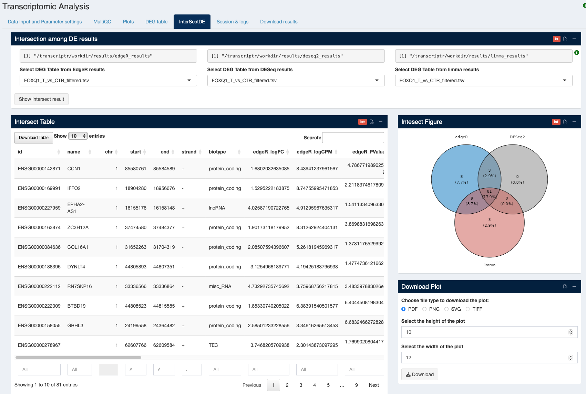

2 Transcriptome Analysis
PLEASE NOTE WE INCLUDED THE POSSIBILITY OF THE HUMAN TRANSCRIPTOME DATA ANALYSIS FROM THE SEQUENCE DATA. NONE OF THE OWNER OF THE CODE OR DATA CENTER IS RESPONSIBLE FOR HANDLING THE HUMAN DATA. IT IS UPTO THE USER IF THEY WANT TO USE THE ONLINE VERSION FOR HUMAN DATA ANALYSIS.
Transcriptome analysis has divided in several parts for the data upload, analysis and visualizing the results.
2.1 Data input and parameters settings
In this section, for better user accessibility, we divided this into 3 sub-parts -

2.1.1 Fastq upload
- If the user performed the Quality analysis (Chapter 1) already, they don’t need to upload the data again, they can use ‘continue from Quality Analysis’.
- The user can also upload the data directly by selecting ‘upload data’ option.
Please note it will take some time to upload the data and once the data uploaded, the list will be displayed in the Data file viewer (see Figure 1.2 Figure 2.1).
2.1.2 Sample info
In the Sample info section, users need to upload the ‘sample sheet/meta data file’ that includes atleast two columns (‘sample name’ and ‘sample condition’) (see Figure 2.2). For Differential Gene Expression (DEG) analysis, user need to provide the comparison conditions as showed in Figure 2.2.
- After uploading the files, all files will be appear in the browser window (see Figure 2.2), please check and verify everything is properly uploaded.
- User can upload any file format, such as text (.txt), CSV (.csv), Excel (.xls, .xlsx).
2.1.3 Parameters settings
Selecting the right parameters for the analysis is the key to the successful run of TranscriptR. The parameters settings (see Figure 2.3) are sub-divided for better understanding and view -

2.1.3.1 Species and database
- Select Species: The user need to select the species from the species list. Here we provided more than 350 species presented in the ‘biomart’ for the analysis. Note that all other species than ‘Human’, ‘Mouse’ and ‘Rat’ come with the scientific name as provided in ‘Ensembl’. The default is ‘Human’.
- Select release version: The default is latest. The user can choose other database version as provided by Ensembl. Please provide the number only in the ‘box’, example, if you want to use version ‘109’, provide only ‘109’ (see Figure 2.4).

2.1.3.2 Alignment parameters
- Choose R1/R2 suffix: For paired-end analysis, please provide the R1 and R2 suffixes.
- Overhang: The default is 100.
- Choose sequence type: Choose whether the sequence is stranded, unstranded or reverse-stranded.
- Choose ID: Select display ID for gene id or transcriptome id. Default is gene ID.

2.1.3.3 DEG filtration
As ‘TranscriptR’ provides the differential gene expression (DEG) analysis result, user need to provide the required filtration for the analysis.
1. Enter CPM value: The default is 1.
2. Number of samples: The default is 3.
3. Choose logFC value: The default is 1.5.
4. Choose FDR value: The default is 0.05.
2.2 Visualization: MultiQC
Please see Chapter 1 for details.
2.3 Visualization: Plots
Since TranscriptR provides differential gene expression (DEG) analysis by three different pipelines, namely EdgeR, DESeq2 and limma, all plots are divided into these three results.

- The plots will be displayed as Figure 2.7 in a PDF format. All of these can be downloaded when the user download the results from the ‘Download results’ tab.
- Please note, if the plots are not loaded after the job completed and clicked on ‘show BoxPlot/Show MDS Plot’ button, refresh the browser and it will appear in the box.
2.4 Visualization: DEG table
We provided differential gene expression (DEG) analysis result as a table format (see Figure 2.8). To display the table, user need to - 1. choose the analysis type (as TranscriptR provides three different pipeline results), such as EdgeR analysis, DESeq analysis or limma analysis and
2. select DEG table from the drop-down list. The list is generated from the information provided by the comparison table.
In the DEG table, we added information for -
1. ID: ENSEMBL gene ID or transcript ID
2. logFC: log fold change value for each ID. Red color shows the higher expression and blue represents the low expression (same corresponds to gene symbol).
3. logCPM: log CPM value provided
4. P_value: p-value provided for each ID.
5. FDR: FDR provided for each ID.
6. Gene Symbol: official gene symbol added in the table. Coloured according to the logFC value.
7. Ensembl link: we added external link for ensembl database to view further information on the ID.
8. GeneCard link: we added genecard database link for more information on the ID.
9. Gene details: Clicking on ’show details button will result to display the boxplot of CPM data for each group (see the note below) and the gene information from HGNC (human only).
10. Chr: Chromosomal location
11. Start: Start position of the chromosome
12. End: End position of the chromosome
13. Strand: chromosomal strand
14. Types: types of genes/transcript.
Please note, we already mentioned that the user may need to reload/refresh the browser after successful run to visualize the results. In this process, the uploaded data table (mentioned in Section 2.1.2) will be lost. To view the CPM boxplot, the user need the upload the sample information data tables again and click on ‘Show details’ on the DEG table.
2.5 Visualization: InterSectDE
Further, we implemented intersection function for the above-mentioned three types of DEG analyses in the ’InterSectDEG tab.
1. To visualize the result, the user needs to select the same result table (eg. groupAvsgroupB) for all three analyses. Please remember selecting different table may results incorrect table and figure.
2. After selecting same result table files from all three analyses, click to ‘show intersect result’. Both intersect table and Venn diagram will appear in respective boxes.
3. To download the full table, check to show all** entries (see Figure 2.9).
4. The Venn diagram can be downloaded in different file format with respective height, width or resolution (see Figure 2.9).

Below is the details of ‘InterSect DEG’ table result (see Figure 2.9) -
1. id
2. name
3. chr
4. start
5. end
6. strand
7. biotype
8. edgeR_logFC
9. edgeR_logCPM
10. edgeR_PValue
11. edgeR_FDR
12. edgeR_baseMean
13. DESeq2_log2FoldChange
14. DESeq2_lfcSE
15. DESeq2_stat
16. DESeq2_pvalue
17. DESeq2_padj
18. limma_logFC
19. limma_AveExpr
20. limma_t
21. limma_P.Value
22. limma_adj.P.Val
23. limma_B
2.6 Session & logs
We included the next tab to show ‘GTF information’, ‘Reference information’, ‘Shiny logs’ and ‘Session information’ for the pipeline run.
2.7 Download Results
In the ‘Download results’ tab, user can download all results performed and saved during the Transcriptome Analysis run in a zip folder. This also contains the snakemake and session logs.
Copyright © 2023-2024. Massimiliano Volpe and Jyotirmoy Das.